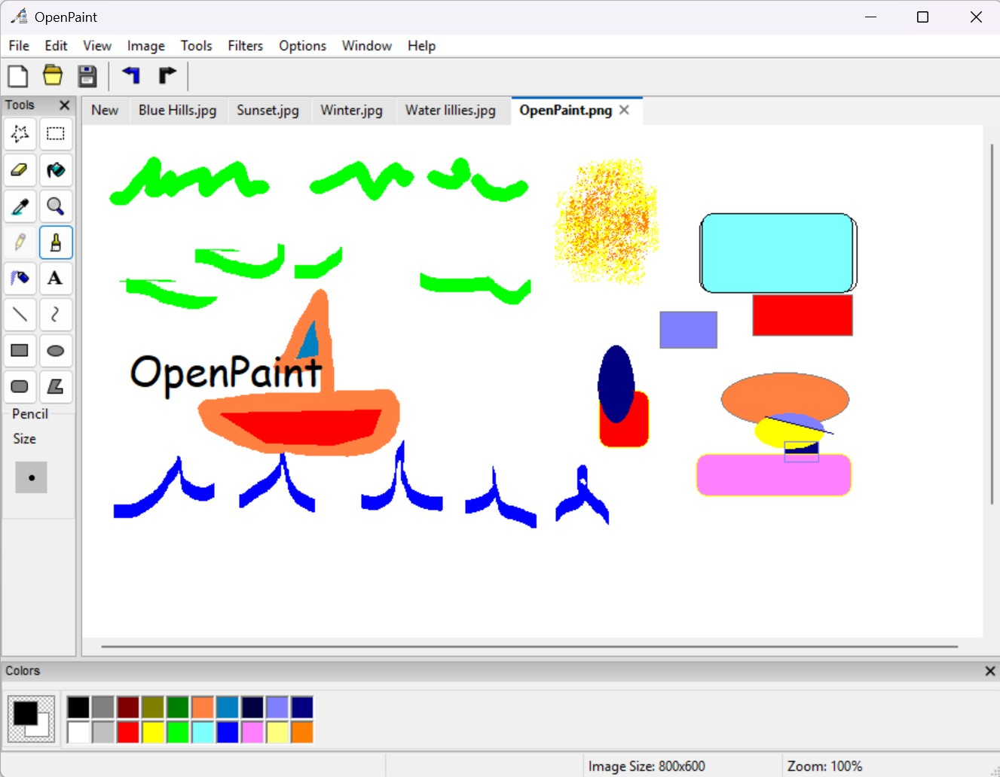

OpenPaint is the cross-platform, open source alternative to MS Paint for Windows, macOS, and Linux.
OpenPaint keeps the classic look and feel of paint, but will never add AI features, instead modernizing with image tabs and cross-platform support.

OpenPaint v2.0.6 was published on June 26, 2026 by the GitHub Actions release workflow.
OpenPaint currently supports BMP, PNG, JPEG, GIF, WEBP, PCX, PNM, TIF, XPM, ICO, and CUR image files.
libwxgtk3.2-dev.wxwidgets from Homebrew.OpenPaint uses CMake and wxWidgets.
cmake -B build
cmake --build build --config Release
To build and run the test suite:
cmake -B build -DOPENPAINT_BUILD_TESTS=ON
cmake --build build
ctest --test-dir build --output-on-failure